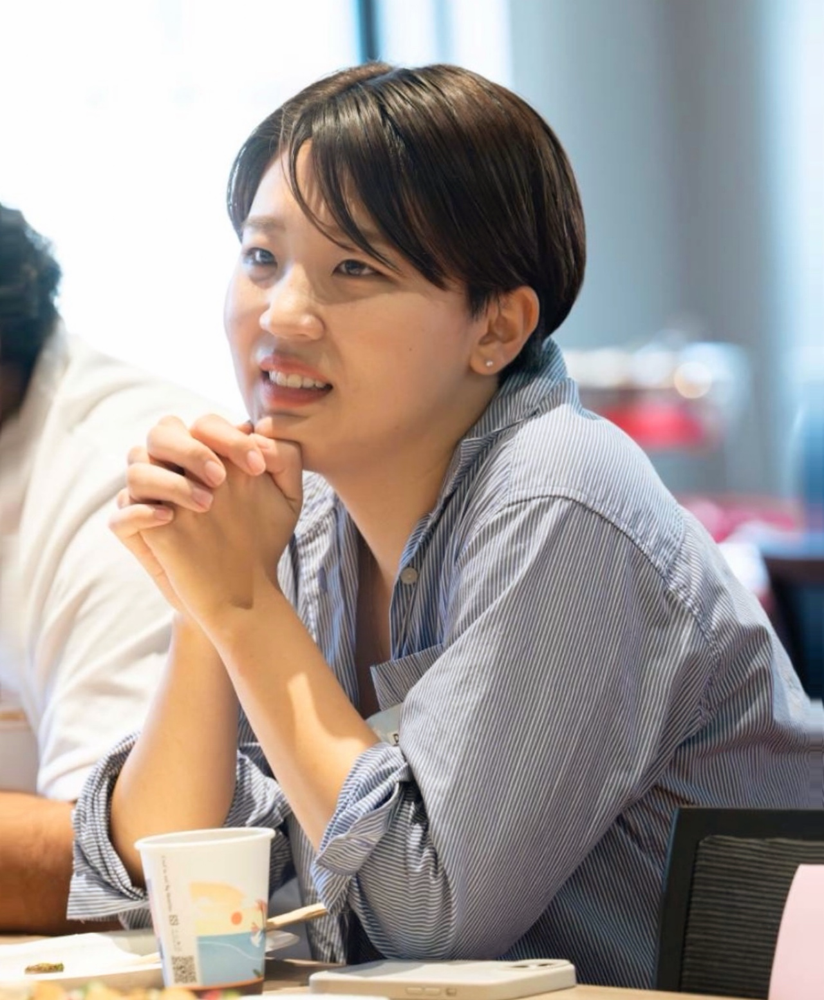

Kokoro Tomita is an interdisciplinary researcher from Japan based in Taiwan, working at the intersection of trauma narrative, queer feminist theory, new materialism, and narrative ethics. Her work is shaped by over seven years of queer community engagement in Japan, including LGBTQ+ youth support, safer-space building, and public-facing event facilitation on aro/ace experiences and gender/sexuality.
B.A. in International Liberal Studies (SILS), Sociology and Gender Studies Certificates at Waseda University; M.A. in Literary Studies (DFLL) at National Taiwan University. She is currently preparing for doctoral studies beginning this fall. She welcomes inquiries about her research and potential collaborations.
Drawing on Bernard Stiegler and Judith Butler’s theory, this article theorizes “compulsory autonomy” as a discursive regime that sustains the illusion of autonomous AI by obscuring the human labor, infrastructures, and maintenance practices—such as content moderation, RLHF, and data work—that make AI systems appear self-sufficient.
This article offers a Baradian reading of Céline Sciamma’s Portrait of a Lady on Fire, arguing that the film moves beyond the “female gaze” by showing how looking is materially arranged. It theorizes this arrangement as an intra-active queer optics, in which painter, model, image, and spectator are not fixed positions but emerge through the apparatuses that make queer desire visible across time.
This thesis argues that Cusk’s Outline models an after-trauma narrative form that resists what Tomita terms “compulsory articulation”—the cultural logic equating subjecthood with linear, timely, and coherent self-narration. Drawing on Jane Bennett’s vital materialism and narratology, it theorizes a “dividual” narrator whose agency emerges through “narrative assemblage”: a patterned arrangement of borrowed voices, material actants, and strategic opacity.
Designed and facilitated a large-scale online public event on aromantic and asexual experiences, drawing approximately 450 participants. The event began with an individual reflection workshop that asked participants to unpack the different meaning of language to each person around romance and sexuality, focusing not on fixed identity categories but on the differing needs, intensities, and nuances through which each person experiences romance, intimacy, and relationships. From this shared standpoint, the event examined why certain differences become marginalized or problematized under amatonormative and heteronormative social norms. The program combined individual reflection, a researcher-led introduction, and a panel discussion with community speakers on self-identification, interpersonal difficulties and coping strategies, and the norms that produce those difficulties.